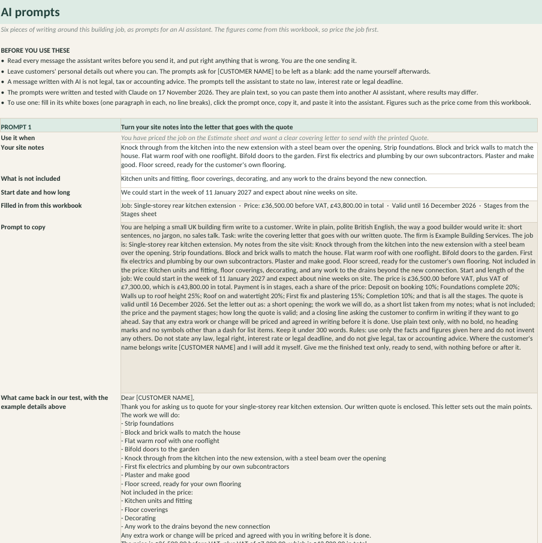

Builders Job Kit (AI-assisted)
Price the job in Excel, then let an AI assistant draft the writing around it: the letter that goes with the quote, a reply to an enquiry, a payment reminder, a variation notice, a price rise and a quote follow-up. The prompts are already written and take the job's figures from the workbook.
Buy for £39One-off payment. Two Excel files (.xlsx), delivered as a download. You need an AI assistant of your own to use the prompts; none is included.

What you get
- Everything in the Builders Job Pack: estimate with wastage, contingency and overhead, printable quote, stage payments, variations log, actual costs against the estimate, dashboard and checks, plus the 12-month cash flow forecast for builders
- An AI prompts sheet with six prompts, one for each piece of writing a job throws up
- White boxes for your own details, such as your site notes or the date an invoice went out
- Figures filled in from the workbook: the job, the price, VAT, the payment stages, the stage amount, the variation and its price
- A worked example under each prompt: the reply it gave in our test, with the example job
- Three more checks on the Checks sheet, so a prompt that points at an empty stage or has been typed over is flagged
The six prompts
- Site notes into the letter that goes with the quote. The work as a short list, what is not included, the price, the payment stages and how long the quote is valid.
- Reply to a new enquiry. Thanks them, asks what you need to know, offers a visit and gives no price.
- Chase a stage payment that is late. A friendly first reminder or a firmer second one, for the whole stage or the part still owed.
- Write up a variation for the customer to agree. The extra, the reason, the price and the effect on the finish date, asking for agreement in writing before the work is done.
- Explain a price rise. What is changing, why, the old and new price, and who it applies to.
- Follow up a quote that has had no answer. Short, no pressure, and easy to say no to.
How it works
- Price the job on the Estimate sheet, as in the Builders Job Pack.
- On the AI prompts sheet, fill in the white boxes for the prompt you want.
- Click the prompt, copy it and paste it into your AI assistant.
- Read what comes back, put right anything that is wrong, add the customer's name and send it yourself.
What was tested, and what was not
The prompts were written and tested with Claude on 17 November 2026. Each one was run with the invented example job in the file and its reply read; the replies are shown in the file. One was also run with a box left empty, and the reply left a clear blank and made nothing up. The prompts are plain text, so you can paste them into another AI assistant, where results may differ. An assistant can still get things wrong, which is why step 4 matters.
Questions
- Do I need to pay for an AI assistant?
- You need access to one. The prompts are ordinary text and ask for nothing unusual. Whether your assistant is free or paid is between you and its maker.
- Does anything get sent anywhere by the file?
- No. The workbook has no macros and no connection to any service. Nothing leaves it unless you copy a prompt and paste it somewhere yourself.
- What about my customers' details?
- The prompts are written to leave them out. They ask the assistant to write [CUSTOMER NAME] as a blank, and you add the name afterwards. Leave addresses and phone numbers out of the white boxes where you can.
- Will the payment reminder quote the law on late payment?
- No. Every prompt tells the assistant to state no law, interest rate or legal deadline and to give no legal, tax or accounting advice. A message written with AI is not advice of any kind. If you need to know your rights, ask a professional or read GOV.UK.
- Do I need this if I have the Builders Job Pack?
- Only if you want the prompts. The other sheets are the same. The Builders Job Pack (£29) stays on sale without them.
- What do I need to open it?
- Microsoft Excel. The files have also been tested in LibreOffice Calc. They contain no macros.
Free to try first
The stage payment calculator splits a job price into a deposit, stages and a final payment, and the markup and margin calculator shows the pricing sum the estimate uses.